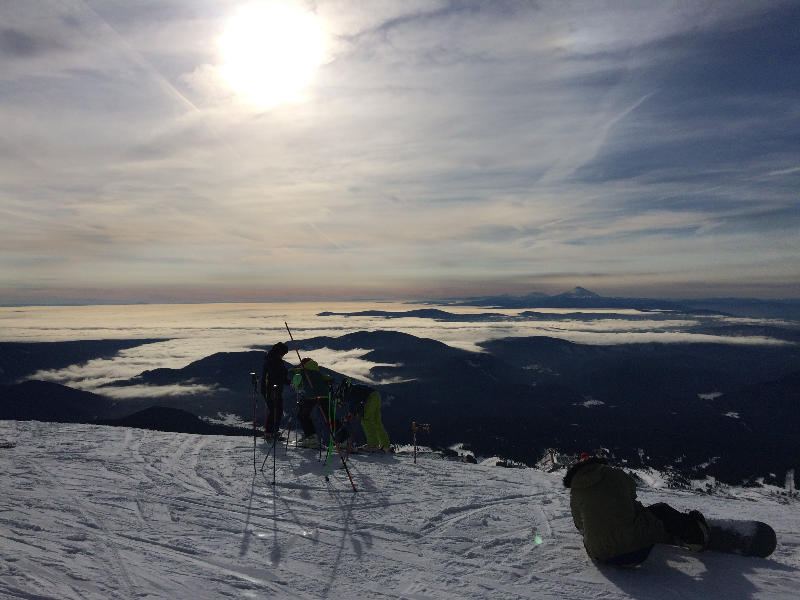
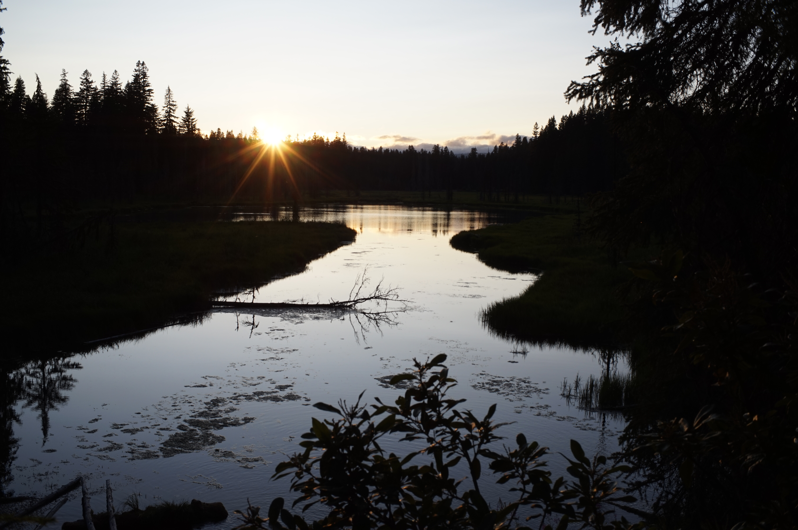
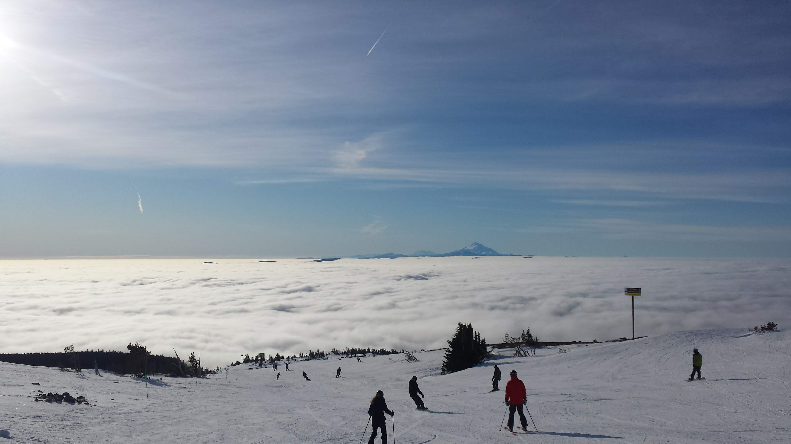
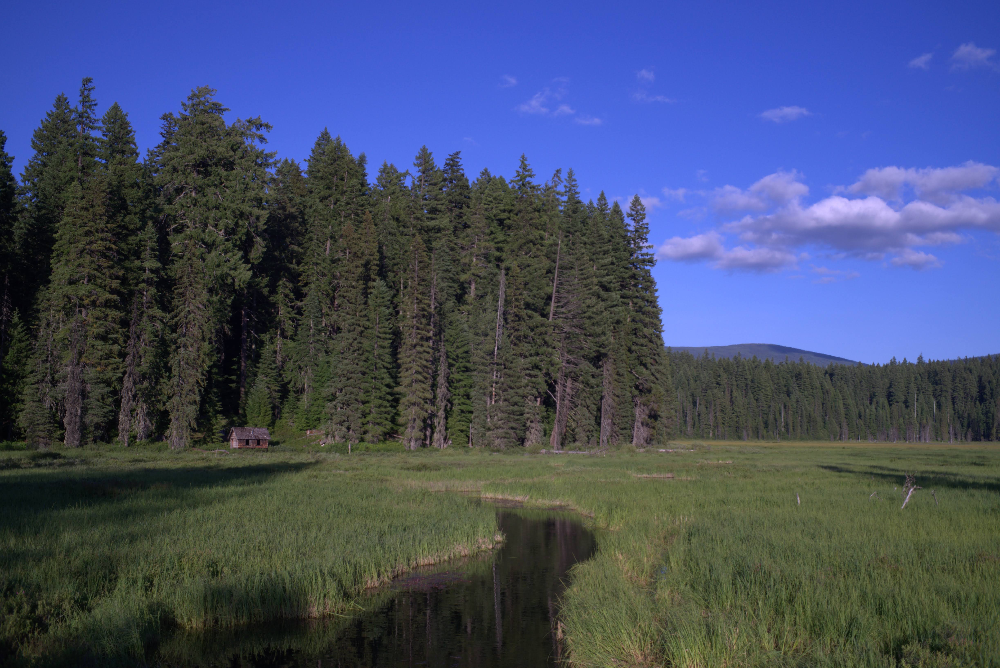
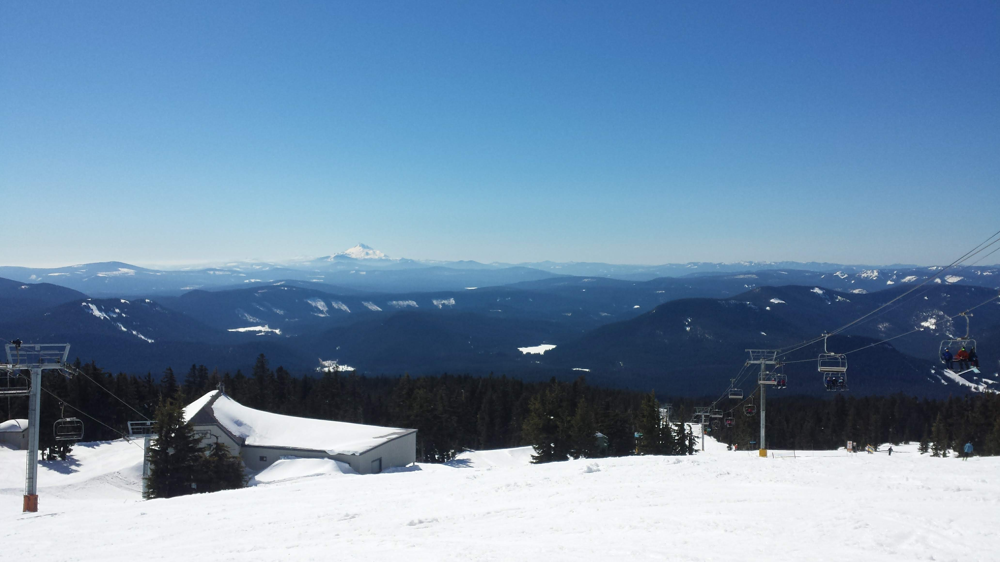

This is a small selection of hikes off HWY 26 heading to Mt.Hood. It allows users to see the distance and elevation for a hike, as well as quickly scroll to a description of the hike from beginning to end. Information for each hike was pulled from OregonHikers.org It likely be continually updated to allow users to get more detail and eventually save hikes that have been done and mark hikes for the top of their priority list. It may also link to the various trailheads.